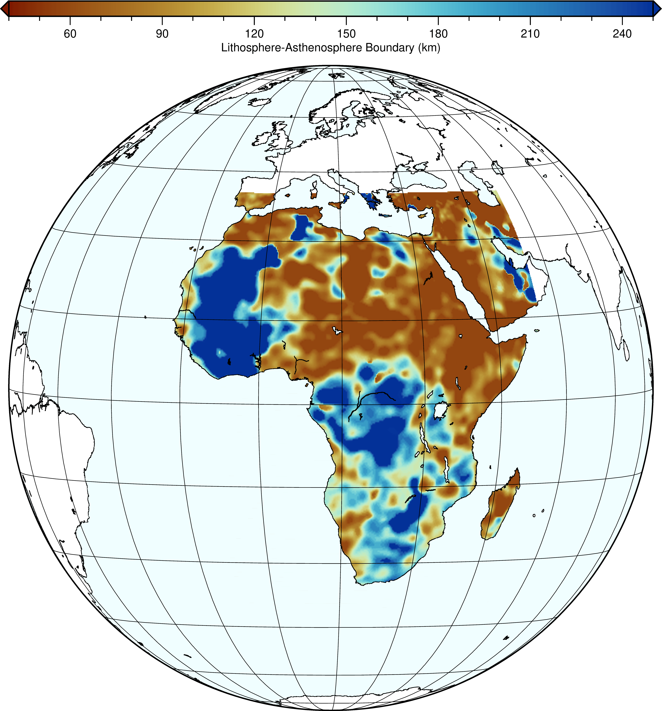
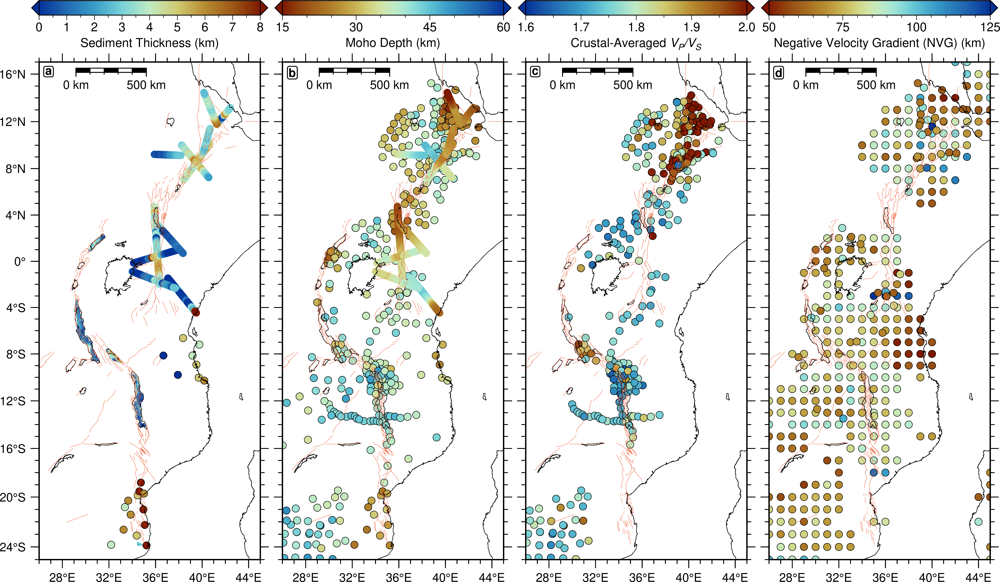

Lithosphere-Asthenosphere Boundary (LAB) Model for Africa

LAB model for the African Plate developed using one of the highest-resolution seismic wave speed models in the region. See Ajala et al. (2026) for details.
[Model Hosted on Zenodo] [Model Hosted on EarthScope]Compilations of Lithospheric Structure Models in the EARS


Compilations of lithospheric structure models from active and passive seismic data and estimates of crustal and lithospheric mantle thinning factors in the East African Rift System. See Ajala et al. (2026) for details.
[Compilations Hosted on Zenodo]